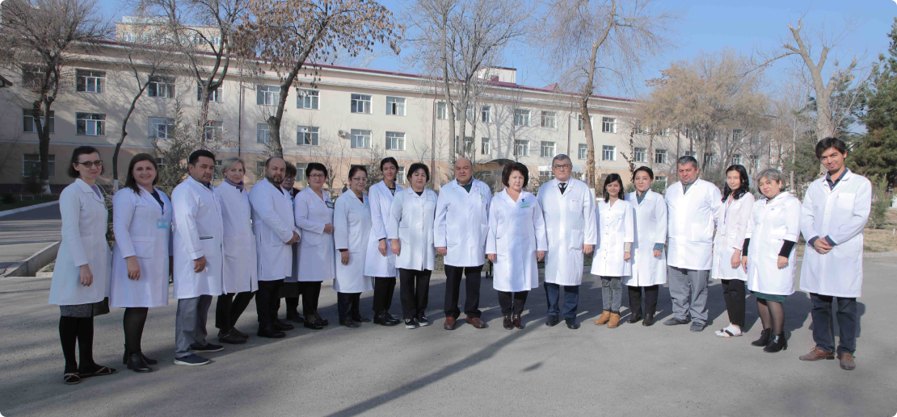

O‘zbekiston Respublikasi
Sog’liqni saqlash vazirligi
1-son shahar kasalxonasi

998 71 281 19 22
eshmatovtoshmat@gmail.com
Buxoro viloyati 1-sonli shahar kasalxonasi 1974 yildan faoliyat yuritib, Buxoro viloyatining 8 ta tumani (Buxoro, G'ijduvon, Shofirkon, Vobkent, Jondor, Romitan, Peshku, Kogon) aholisiga ixtisoslashtirilgan ambulator psixiatriya yordamini ko‘rsatib kelmoqda. Bundan tashqari, Buxoro viloyati aholisiga chegara chizig‘i kasalliklari (nevroz, depressiya, astenik buzilishlar, anksiyete-fobik buzilishlar va boshqalar) bilan kasallangan shaxslarga statsionar yordam ko‘rsatadi. Kasalxonada ambulatoriya, psixo-nevrologik, geronto-psixo-nevrologik bo'lim va kunduzgi statsionar bo'lim mavjud.
Shuningdek, fizioterapiya xonasi, suv tozalash xonasi, massaj xonasi mavjud. Kasalxonada Buxoro vrachlar malakasini oshirish institutining psixiatriya kafedrasi mavjud bo‘lib, kasalxona kafedra xodimlari bilan yaqindan hamkorlik qiladi, murakkab va munozarali hollarda konsultatsiyalar olib boriladi, seminarlar, tibbiy maslahatlar o‘tkaziladi. Kasalxonada har qanday yordam bepul, davlat hisobidan ko'rsatiladi, yo'llanma, order va boshqalar talab qilinmaydi.